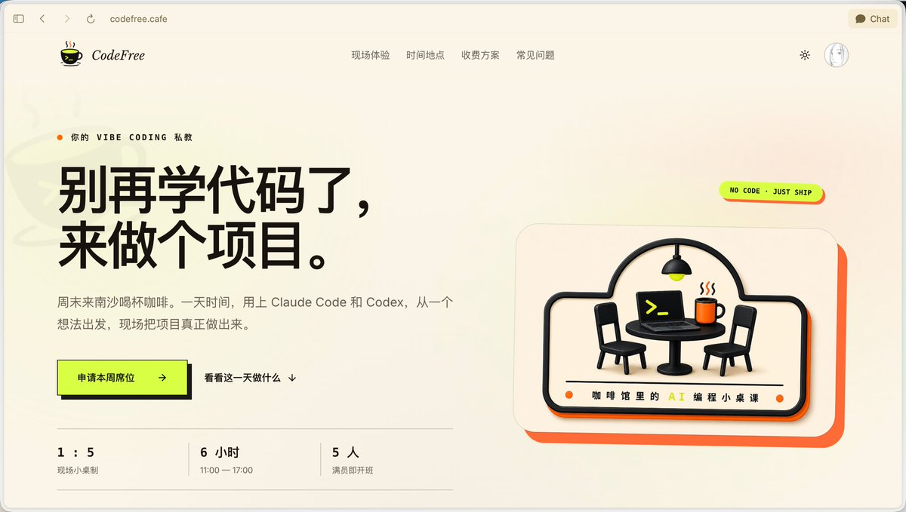

奶昔🥤
@realNyarime
@idoubicc 可惜不在广州，不然这种课对于有想法但难实现的同学很有帮助，或许4096就是交个朋友

idoubi
@idoubicc
我昨天做了个：https://t.co/ULtivYzXlr
定位是：咖啡馆里的 AI 编程小桌课
周末来咖啡馆，一天时间，用上 Claude Code 和 Codex，从一个想法出发，现场把项目真正做出来。
## 可以收获什么
1. 帮你搞定网络配置，让你畅快用上 cc 和 codex
2. 教你基本的 Vibe Coding 技巧和调试方法
3. https://t.co/9BLNzkHgFp